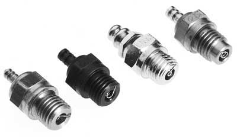
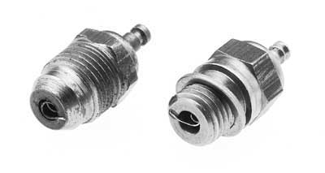
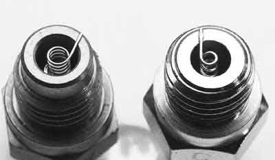
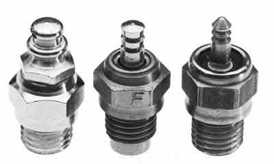

ЧТО ТАКОЕ КАЛИЛЬНАЯ СВЕЧА? Калильная свеча -- это система зажигания для радиоуправляемой модели с калильным двигателем. Вместо системы искрового зажигания, которую можно встретить в автомобильных двигателях, значительно простая калильная свеча есть именно то, что мы используем для воспламенения топлива в наших двигателях. У нее нет ни единой двигающейся детали или настройки, её единственная функциональная компонента -- жестко закрепленная проволочная спираль. КАК ОНА РАБОТАЕТ? Пуск двигателя -- одна из задач калильной свечи. Когда на свечу подается электрическое напряжение, оно раскаляет спираль свечи до свечения. Тем самым воспламеняя топливно-воздушную смесь в цилиндре при запуске двигателя. Во время работы двигателя, тепло, генерируемое от сжатия и сгорания, поддерживает элемент калильной свечи достаточно горячим для того, чтобы продолжать воспламенять топливную смесь самостоятельно без помощи внешнего источния энергии. Вот, в наиболее простом виде как работает калильная свеча.ЧТО ТАКОЕ "ТУРБО" СВЕЧА? Калильные свечи выпускаются в двух видах: стандартные и турбо. Большинство двигателей приходят со стандартной свечой. Они представляют собой прямой корпус с резьбой, который ввинчивается в отверстие в головке цилиндра в камеру сгорания. Турбо свечи имеют другой тип корпуса; конец свечи, который входит в камеру сгорания имеет конусообразную форму. Конусообразный конец сопрягается с головкой цилиндра, специально разработанной для использования турбо свечи. Головка цилиндра тоже имеет конусность под свечу такого типа. Предполагаемые преимущества -- меньшие потери давления вокруг свечи и меньшее нарушение формы камеры сгорания. Отверстие в головке цилиндра, через которое свеча контактирует с топливо-воздушной смесью получается намного меньше и уменьшается количество граней, которые создают нежелательные точки перегрева. КАКУЮ СВЕЧУ ВЫБРАТЬ? Ок; Вы спалили свечу, которая поставлялась вместе с двигателем, посему самое время раздобыть новую. Какую же купить? Вы можете попытаться купить такую же, если у вас есть информация о производителе и типе свечи. Более вероятно, что вам придется выбирать из того, что имеется в продаже в вашем местном хобби-магазине.Что затрудняет выбор новой свечи, так это обилие доступных типов. Каждый производитель предлагает несколько различных свечей от 3 - 4 до десяти и более. Свеча обычно идентифицируется кодом, который указывает её эффективную рабочую температуру; вовсе не рабочую температуру двигателя или окружающего воздуха, но относительную температуру спирали свечи. Каждый производитель поддерживает собственную систему температурного ранжирования и обычно предоставляет общие рекомендации по использованию для того чтобы привести пользователя к правильному выбору требуемой ему свечи. Процесс может быть однако затруднен т.к. не существует единой системы ранжирования. Например, O.S. R5 совсем не то же самое, что McCoy MC-9, хотя обе свечи относятся к "холодным" свечам. Руководства произодителей свечей могут удовлетворить моделистов, которым достаточно, чтобы их модель двигалась; гонщикам и поклонникам мощности, однако, не удасться выжать максимум из своих двигателей без небольшого эксперимента. Итак, что мы хотим от замены свечи? Некоторые общие правила насчет свечей исходят из размера двигателя и типа используемого топлива. Двигатели меньшего размера обычно требуют более горячие свечи, в то время как бОльшие двигатели предпочитают свечи похолоднее. Двигатели, работающие на топливе с высоким содержанием нитрометана, также предпочитают холодные свечи, тогда как те, которые работаеют с меньшим количеством нитрометана, требуют более горячие свечи (содержание нитрометана в топливе для авто обычно от 10 до 40%). Например, маленькому .12 (2.1 сс) двигателю работающему на топливе с высоким содержанием нитрометана больше подойдет теплая свеча из средне-температурного диапазона (маленький двигатель = горячая свеча ; много нитрометана = холодная свеча). Та же свеча может подойти для .21 (3.5сс) двигателя, работающего на топливе с низким процентом нитрометана (большой двигатель = холодная свеча ; мало нитрометана = горячая свеча). Размер двигателя и тип топлива достаточно просто определить, посему эти рекомендации могут указать вам правильное направление. Для тех, кто хочет выжать из двигателя максимум, однако, есть еще один элемент, не так легко определяемый, который нужно принять в рассмотрение. Это степень сжатия. Степень сжатия двигателя -- еще один фактор в выборе нужной свечи. Двигатели с высокой степенью сжатия требуют более холодных свечей, тогда как двигатели с низкой степенью сжатия предпочитают горячие свечи. Производители двигателей редко указывают степень сжатия, поэтому может быть достаточно сложно воспользоваться этим правилом для выбора свечи, если вы не знаете как вычислить степень сжатия или как ее измерить прибором. Это правило наиболее полезно если вы добавляете или удаляете прокладки под головку цилиндра. Более толстая прокладка уменьшает компрессию; более тонкая увеличивает. Запомните: настройка степени сжатия с помощью прокладок может потребовать замену свечи (оставим это для более опытных мотористов). ЧТО СЛУЧИТСЯ ЕСЛИ ИСПОЛЬЗОВАТЬ НЕ ТУ СВЕЧУ? Если вы установили свечу, которая слишком горячая или слишком холодная для вашего случая, это проявится одиним из двух способов. Если свеча слишком горячая, двигатель может начать детонировать, давать ранние вспышки и перегреваться. Детонация случается когда топливная смесь взрывается в цилиндре, вместо того, чтобы сгорать. Это нежелательно, потому что двигатель может быть поврежден. Признаками детонации являются "пропуски" в звуке выхлопа на высоких оборотах и точечная коррозия головки цилиндра вокруг свечи и на донышке поршня. Сильная детонация может вызвать обрыв спирали свечи, что повлечет серьезные повреждения двигателя. Главная причина детонации, однако, чрезмерная компрессия. Простое использование горячей свечи обычно не приводит к детонации, поэтому не бойтесь экспериментировать. Если, используя топливо с высоким содержанием нитроментана, вы увеличили компрессию уменьшением зазора под головкой цилиндра, более горячая свеча может просто пережать двигатель и вызвать повреждения. По крайней мере, чрезмерно горячая свеча вызовет раннее зажигание, при котором топливная смесь начинает гореть задолго до того, как поршень достигает верхней мертвой точки.Использование слишком холодной свечи приводит к потере ускорения и максимальной скорости и ухудшает работу холостого хода. Если свеча значительно холоднее, чем она должна быть, вы возможно заметите избыточное присутствие несгоревшего топлива в выхлопе, но не путайте это с избыточно богатой топливной смесью. ЧТО ДЕЛАЕТ СВЕЧУ ХОЛОДНЕЕ ИЛИ ГОРЯЧЕЕ? Множество факторов влияет на температурный диапазон свечи, но основными являются толщина, длина и состав проволоки, использованной для формирования спирали. Невозможно раскопать что-либо о составе проволоки, т.к. большинство изготовителей хранят его в тайне, но сама проволока конечно же может быть обмерена. Другими факторами, влияющими на температуру свечи, являются размер отверстия, в котором установлена спираль, тип покрытия корпуса и материал, из которого он изготовлен. КАКАЯ СВЕЧА САМАЯ ЖИВУЧАЯ? Если топливная смесь настроена должным образом, большинство свечей продержатся одинаково долго. Когда топливная смесь слишком бедная, горячая свеча имеет больше шансов быть поврежденной как результат того, что ее спираль более тонкая. Качество и прочность материала спирали свечи также влияет на долговечность, что варьируется от одного изготовителя к другому, но может быть выяснено с опытом. Итак, в рамках одного бренда, имеется небольшое преимущество у холодных свечей, но это преимущество не может быть достаточным для выбора в их пользу если ценой окажется ухудшение производительности. НАИБОЛЕЕ ОХРАНЯЕМЫЙ СЕКРЕТ ПРОФИ Одним из наиболее тщательно охраняемых секретов самых опытных гонщиков и механиков является то, что вы можете получить довольно значительный прирост мощности экспериментируя с различными свечами. Как отмечалось ранее, калильная свеча — это система зажигания калильного двигателя. Каждый, кто хоть раз работал с двигателями с искровым зажиганием, знает, что момент зажигания может иметь чрезвычайное влияние на производительность двигателя. Момент зажигания - это момент воспламенения топливной смеси относительно положения поршня и коленвала во время такта сжатия. Когда поршень находится в верхней мертвой точке (ВМТ) цилиндра, кривошип коленвала, к которому прикреплен шатун, указывает точно вверх. Поршень находится в самой высокой точке своего перемещения в цилиндре, и следовательно коленвал находится в точке "ноль" градусов. Коленвал должен провернуться на 360 градусов чтобы сделать полный оборот, поэтому угол поворота коленвала в градусах используется для отсчитывания событий, происходящих внутри двигателя. Например, открытие и закрытие окна, зажигание. Хоть и нельзя точно засечь или определенно установить момент, когда происходит воспламенение внутри калильного двигателя, это помогает наглядно продемонстрировать что происходит, когда вы экспериментируете с различными свечами. Скажем, например, что топливная смесь возгорается точно в момент, когда поршень достигает верхней точки в цилиндре. Это действительно означает, что момент зажигания имеет место в 0 градусов поворота коленвала. Установка более горячей свечи в то же самый двигатель заставляет топливо воспламеняться раньше, т.к. требуется меньшее давление для разогрева спирали свечи до точки возгорания топлива. Допустим теперь, что зажигание происходит за 10 градусов до того, как поршень достигнет ВМТ. На ДВС-ном языке это будет означать, что момент зажигания установлен с опережением в 10 градусов. Зачем все это нужно? Простое знание, что температура свечи сказывается когда происходит сгорание топлива, будем надеяться, поможет вам понять, почему должный выбор свечи улучшит производительность. В общем случае, лучше всего попробовать изменить опережение зажигания — в случае калильного двигателя, насколько это возможно не заходя слишком далеко. Если смесь возгорается слишком рано, то мощность падает, и преждевременное зажигание или детонация могут иметь место.Инженеры фирмы Picco не используют свечи для тонкой настройки двигателей. Они попросту находят соответствующую свечу для конкретного приложения и останавливаются на этом. Они не заметили большой разницы в замене свечи на слегда более горячую или более холодную свечу. Однако, они признают, что слишком сильное отклонение от идеальной температуры отрицательно скажется на мощности двигателя. ОКОНЧАТЕЛЬНЫЙ АНАЛИЗ Мы надеемся, что теперь вы знаете больше о калильных свечах и что следует делать с ними. Большинство людей не задумываются о свечах до тех пор, пока они не перестают работать. Именно тогда, эта информация может быть наиболее полезной. Просто помните, что не существует волшебной свечи, которая внезапно заставит ваш двигатель заработать, как никогда ранее; калильные свечи всего лишь один из элементов, вносящий свой вклад в общую производительность. |